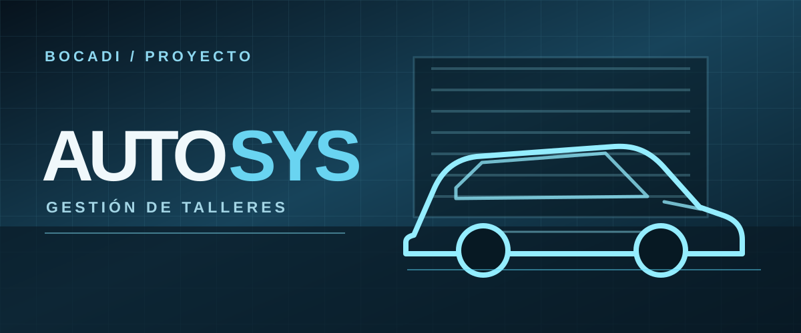

ACERCA DE ESTE PROYECTO

Sistema web para la gestión de talleres mecánicos, clientes, vehículos y órdenes de ingreso.
VER EN BIBLIOTECA ›Desarrollo aplicaciones web y sistemas de gestión que convierten necesidades reales en soluciones claras y funcionales.
Proyectos de Juan Cruz Bocadi
Explorá los proyectos, las tecnologías y la actividad pública en GitHub desde esta biblioteca.
Proyectos, código y conexiones alrededor de mi trabajo.
Soy Juan Cruz Bocadi, estudiante de Ingeniería en Sistemas en la Universidad Abierta Interamericana. Me interesa crear aplicaciones web y sistemas de gestión que resuelvan necesidades concretas. Trabajo con C#, ASP.NET Core, JavaScript, Python y bases de datos SQL, y disfruto aprender mientras desarrollo proyectos propios y académicos.
HTML5 · CSS3 · JavaScript · Tailwind CSS · Razor
C# · ASP.NET Core MVC · Python · Django · Entity Framework Core
SQL Server · T-SQL · Git · GitHub · Visual Studio · VS Code · Windows · Linux
Eventos públicos de mi cuenta de GitHub.
Cargando actividad de GitHub…
Si querés conversar sobre un proyecto, una oportunidad laboral o intercambiar ideas, escribime.